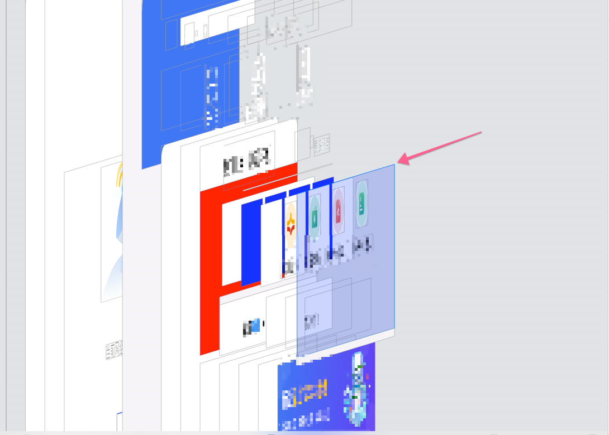
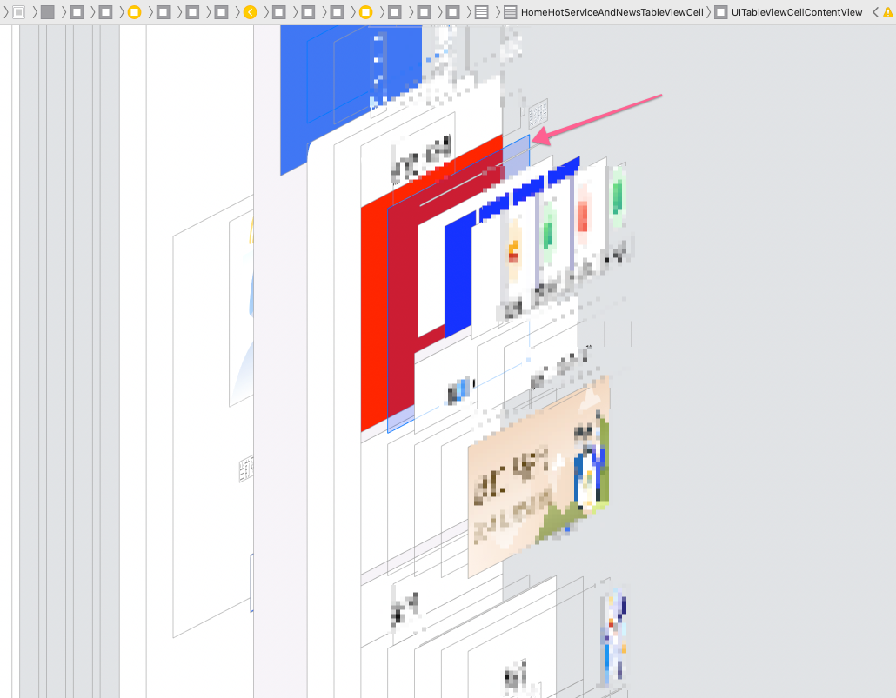

<!DOCTYPE html><html lang="zh-Hans"><head><meta charset="utf-8"><meta name="X-UA-Compatible" content="IE=edge"><title> 适配iOS14相关问题 · Gong</title><meta name="description" content="适配iOS14相关问题 - Bojie Gong"><meta name="viewport" content="width=device-width, initial-scale=1"><link rel="icon" href="/favicon.png"><link rel="stylesheet" href="/css/apollo.css"><link rel="search" type="application/opensearchdescription+xml" href="https://gongbojie.com/atom.xml" title="Gong"></head><body><div class="wrap"><header><a href="/" class="logo-link"></a><ul class="nav nav-list"><li class="nav-list-item"><a href="/" target="_self" class="nav-list-link">BLOG</a></li><li class="nav-list-item"><a href="/archives/" target="_self" class="nav-list-link">ARCHIVE</a></li><li class="nav-list-item"><a href="https://weibo.com/p/1005052282743972" target="_blank" class="nav-list-link">WEIBO</a></li><li class="nav-list-item"><a href="https://github.com/gongbojie" target="_blank" class="nav-list-link">GITHUB</a></li><li class="nav-list-item"><a href="/about" target="_self" class="nav-list-link">RESUME</a></li><li class="nav-list-item"><a href="/atom.xml" target="_self" class="nav-list-link">RSS</a></li></ul></header><main class="container"><div class="post"><article class="post-block"><h1 class="post-title">适配iOS14相关问题</h1><div class="post-info">Sep 25, 2020</div><div class="post-content"><h1 id="1-iOS14-UITableViewCell里添加子View不响应"><a href="#1-iOS14-UITableViewCell里添加子View不响应" class="headerlink" title="1. iOS14 UITableViewCell里添加子View不响应"></a>1. iOS14 UITableViewCell里添加子View不响应</h1><p>点击UITableViewCell的子控件无反应。通过查看页面层级，发现UITableViewCellContentView覆盖到了所有控件之上。</p>
<p></p>
<p>解决方案：<code>[cell addSubView:xx];</code>，修改为<code>[cell.contentView addSubView:xx];</code>。</p>
<p></p>
</div></article></div></main><footer><div class="paginator"><a href="/2020/09/29/App内webview跳转支付宝/" class="prev">上一篇</a><a href="/2020/09/17/UIView相关问题/" class="next">下一篇</a></div><div class="copyright"><p>© 2015 - 2021 <a href="https://gongbojie.com">Bojie Gong</a>, powered by <a href="https://hexo.io/" target="_blank">Hexo</a> and <a href="https://github.com/pinggod/hexo-theme-apollo" target="_blank">hexo-theme-apollo</a>.</p></div></footer></div><script async src="//cdn.bootcss.com/mathjax/2.7.0/MathJax.js?config=TeX-MML-AM_CHTML" integrity="sha384-crwIf/BuaWM9rM65iM+dWFldgQ1Un8jWZMuh3puxb8TOY9+linwLoI7ZHZT+aekW" crossorigin="anonymous"></script></body></html>